Big Orange Crayonmusical thingsMy Place in Space, the Malarkies, K., Princeton Reverbs Colonial and the Masters of the Hemisphere Keene State College, Keene, New Hampshire May 4th, 2002 This was the first of my recent string of shows from which I couldn't put up any pictures because of my broken computer, and was also my first time ever being in the state of New Hampshire. It's not bad. It's better than Vermont, and the weather that day was pretty nice. That's about all the review you're going to get out of me because I've got so many things to put up right now. Sorry. Pictures: My Place in Space 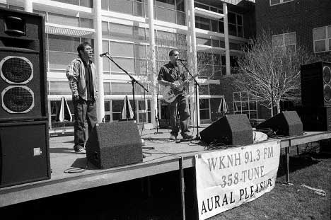 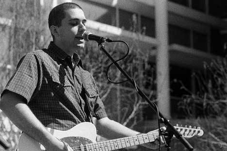 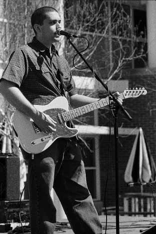 The Malarkies 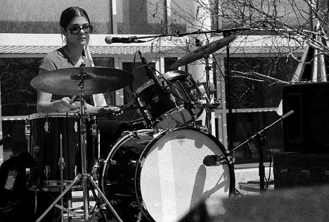 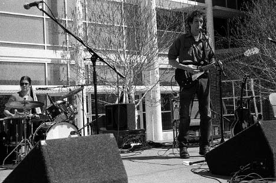 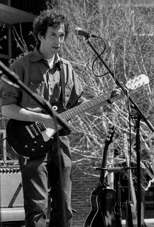 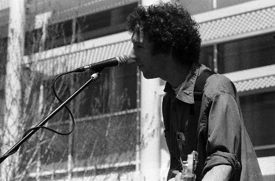 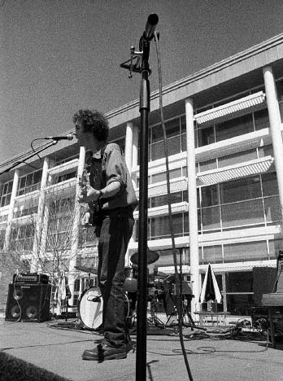 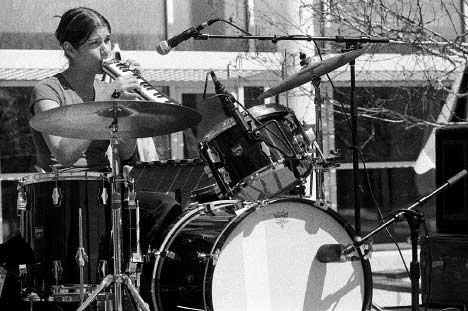 K. (Some of these might be of the Malarkies, since Karla, Matt and Ruth were all in both, so I don't really remember which pictures are which) 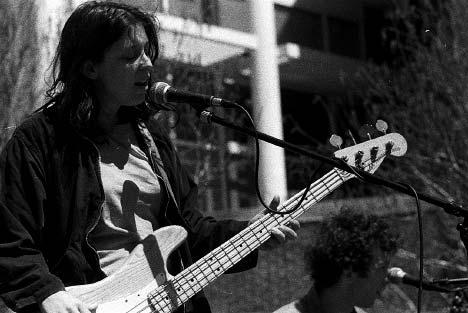 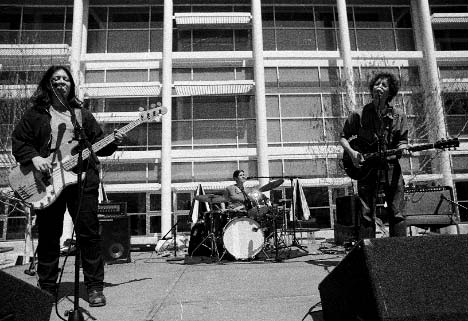 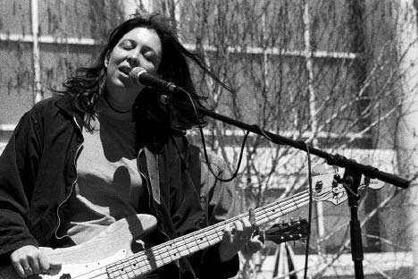 Here's a bigger one of this 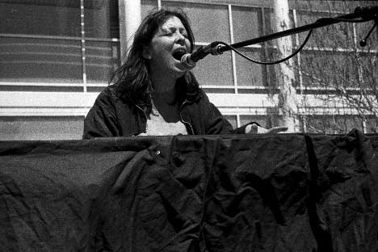 Princeton Reverbs Colonial 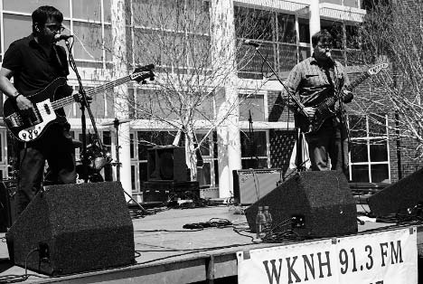 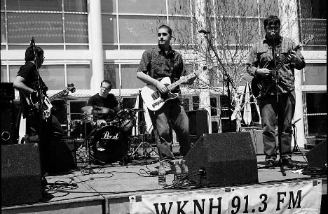 Masters of the Hemisphere 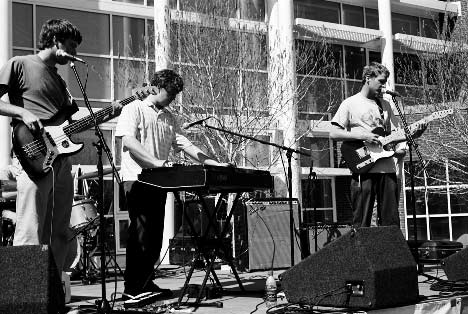 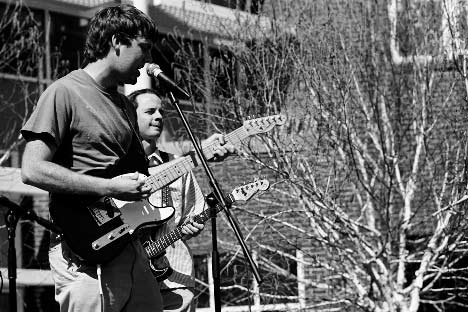 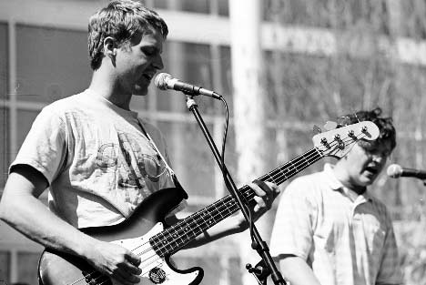 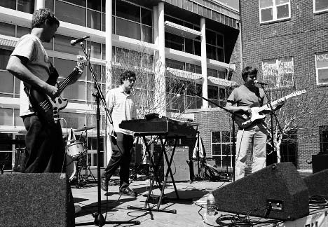 Here's a bigger one of this one Camera stuff: Body: Nikon F3HP Lenses: 50mm f/1.8, 105mm f/2.5, and 24mm f/2.8 Nikkors Film: (two rolls at this show): - My Place In Space/K/Malarkies: Ilford Delta 3200 pulled to 400, developed in Rodinal (1+25). Grainy, low contrast, but detail everywhere. Eh. It was an experiment. - Princeton Reverbs/Masters: Agfapan APX 25, shot at ISO 25, developed in Rodinal (1+75). I had a partial roll (about 8 frames) in my bag, so I decided to use it when I used up the Delta 3200 roll. I never shot this film at a show before, but it's my favorite film for everything else. I'm still in denial about it being discontinued. Please don't use these elsewhere unless you are in the band or are a nice person. |
{kind=link}
{kind=link}